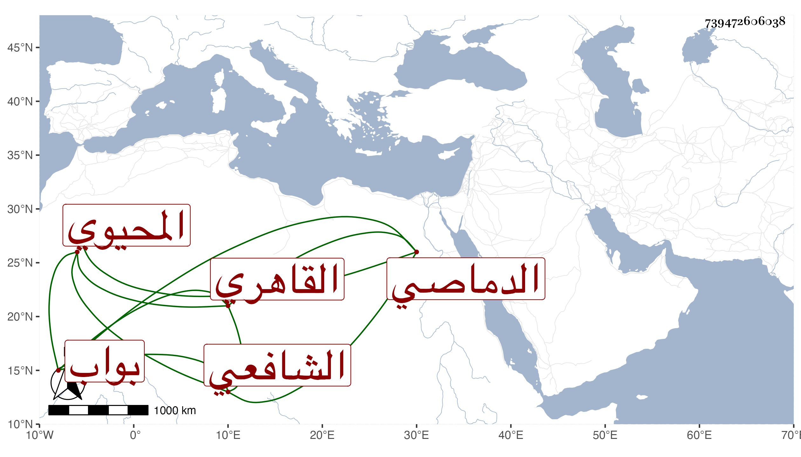

0902Sakhawi.DawLamic.ITO20230111-ara1.EIS1600.739472606038
Biography ID: 739472606038
697
عبد القادر بن أبي بكر بن خضر المحيوي الدماصي ثم القاهري الشافعي بواب المؤيدية كان ويعرف بالدماصي . ولد سنة اثنتين وأربعين وثمانمائة تقريبا واشتغل يسيرا وقرأ في العربية وتعانى النظم وتخرج فيه بالشهاب بن مباركشاه ثم أذن له الحجاري وسمعته في ذي القعدة سنة تسع وستين ينشد من نظمه :
| ناديت في مكتب الأطفال ذا هيف | أضنى فؤادي بالاسقام والبين |
| جرد حبيبي لي الماضي فقال وقد | أبدى التبسم باسم الله من عيني |
وتطارح مع جماعة كالشهاب المنصوري وقرض مجموع البدري فأطال وقد أقبل عليه السلطان حين أعجبه علمه الملحن له ابن العفريت وعمل ما اقترحه فلائق بخاطره وأحسن إليه بدراهم وكسوة ونزله في تربته ومن ذلك :
| يا خفي الألطاف | أمنا مما نخاف |
